Gebruikershandleiding
Reis Dossier Systeem voor medewerkers en managers van een reisorganisatie
- Voor wie
- medewerkers en managers die dagelijks boekingen beheren
- Versie
- 21 oktober 2026
- Schermen
- echte schermen uit de app; alle namen, bedragen en boekingen zijn fictief
- Techniek?
- die staat in de technische handleiding (
docs/handleiding.md); hier komt niets voor wat je niet nodig hebt
Inhoud
- Welkom bij RDS
- Aan de slag: inloggen en je account
- Het scherm leren kennen
- Van interesse tot afgeronde reis
- Het boekingsscherm
- Documenten en e-mail
- Betalingen
- Boekers en prospects
- Voor managers: beheren en inrichten
- Wat ziet de klant?
- Wie mag wat?
- Hulp bij problemen
- Begrippen en statussen
Ben je nieuw? Lees hoofdstuk 1 tot en met 4: dan weet je genoeg om een boeking van begin tot eind te beheren. Daarna sla je op wat je nodig hebt. Managers vinden hun extra taken in hoofdstuk 9.
Printen kan: elk hoofdstuk begint op een nieuwe pagina en tabellen, schermen en kaders worden nooit over twee pagina's verdeeld.
Rollen in deze handleiding: Medewerker en Manager. Waar een onderdeel alleen voor managers is, staat dat erbij.
1. Welkom bij RDS
RDS is het dossiersysteem van de reisorganisatie. Per reis houd je één boeking (een dossier) bij: wie boekt, wie er meereist, welke verblijven en activiteiten erbij horen, welke documenten en e-mails er zijn uitgegaan en wat er is betaald. Alles staat bij elkaar, voor iedereen in je organisatie, en je ziet uitsluitend de gegevens van je eigen organisatie.
Jouw boekingswereld in RDS
Wat je uit het dagelijks werk kent, heeft in RDS een vaste plek:
| In het reisbureau | In RDS |
|---|---|
| Iemand die interesse heeft en informatie vraagt | Prospect (menu Prospects) |
| De klant die de reis boekt en betaalt | Boeker; bij een boeking is dat de hoofdboeker |
| Het reisdossier | Boeking met een nummer als BK-2026-001 |
| Hotel, appartement of villa | Accommodatie (met een leverancier), als regel in het blok Accommodaties van de boeking |
| Excursie, stadstour, transfer, ticket | Activiteit in de boeking |
| Medereizigers | Reizigers in de boeking |
| Bevestiging, voucher, reisbescheiden | Document, gemaakt uit een Word-sjabloon (template) als PDF of DOCX, of geüpload als PDF |
| Een mail aan de klant | E-mail uit een e-mailtemplate; wat bij een boeking is verstuurd blijft in het dossier bewaard |
| Voorschot en restbetaling | Betalingen, via de online betaaldienst Mollie (iDEAL, creditcard) |
| De klant wil zijn reis zien en betalen | Klantportaal: een eigen pagina voor de klant |
De levensloop van een boeking
Een boeking doorloopt statussen die je zelf bijhoudt:
Aanvraag → Offerte → Boeking → Voorschot → Betaald → Op reis → Weer thuis → Afgerond
Je kiest de status zelf; RDS dwingt geen volgorde af en verandert de status niet vanzelf als er een betaling binnenkomt.
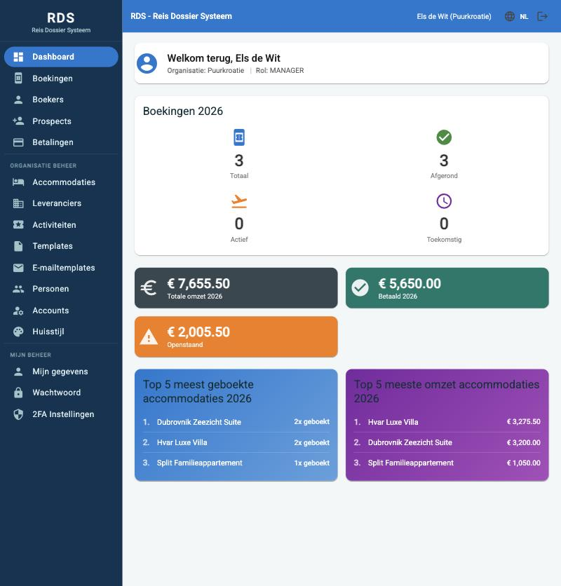
Vier dingen om meteen te onthouden
1. Alles hangt aan de boeking
Documenten maak je en e-mails verstuur je vanuit de boeking (of een e-mail vanuit een prospect). In de schermen Templates en E-mailtemplates beheer je alleen de sjablonen.
2. Geschiedenis wordt niet gewist
Documenten, betalingen en verzonden e-mails kun je niet verwijderen. Zo blijft het dossier betrouwbaar.
3. Klikken op de regel doet niets
In elke lijst werk je met de iconen aan het einde van de regel: bekijken, bewerken, verwijderen.
4. Je ziet wat je mag
Ontbreekt een knop of menu-item, dan heeft je rol daar geen recht op. Vraag het een manager.
2. Aan de slag: inloggen en je account
Inloggen
- Open RDS in je browser. Heb je geen geldige sessie, dan kom je op het inlogscherm.
- Vul je gebruikersnaam en wachtwoord in en kies Inloggen.
- Heb je twee-factor-verificatie aan, dan vraagt RDS daarna om de 6-cijferige code uit je authenticator-app.
- Je komt op het Dashboard.
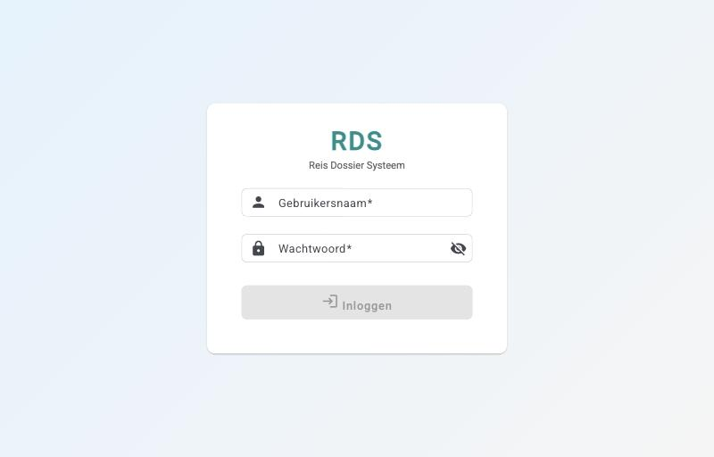
Na ongeveer een uur word je automatisch uitgelogd; je komt dan weer op het inlogscherm. Zorg dat je werk is opgeslagen voor je een pauze neemt.
Staat bij jouw account Wachtwoord moet gewijzigd worden aan, dan stuurt RDS je eerst naar het scherm Wachtwoord. Kies een nieuw wachtwoord (minimaal 8 tekens) en log daarna gewoon verder in.
Je eigen gegevens (menu Mijn beheer)
| Scherm | Wat je er doet |
|---|---|
| Mijn gegevens | je voornaam, tussenvoegsel en achternaam aanpassen |
| Wachtwoord | je wachtwoord wijzigen: eerst je huidige wachtwoord, daarna twee keer het nieuwe (minimaal 8 tekens) |
| 2FA Instellingen | twee-factor-verificatie aan- of uitzetten |
Twee-factor-verificatie (2FA)
Met 2FA heb je naast je wachtwoord een code uit een app op je telefoon nodig (zoals Google Authenticator of Authy). Dat beschermt je account als iemand je wachtwoord kent.
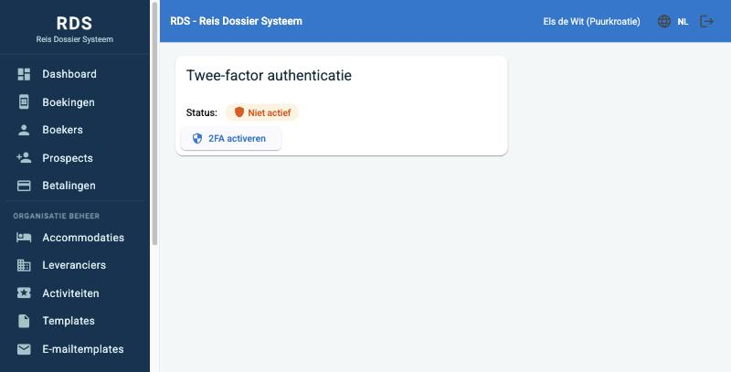
- Kies 2FA activeren en scan de QR-code met je authenticator-app (of voer de sleutel handmatig in).
- Bevestig met de code die de app toont.
- Bewaar de herstelcodes op een veilige plek. Ze worden alleen nu getoond en werken elk één keer.
Log in met Herstelcode gebruiken en een van je herstelcodes. Heb je die ook niet meer, dan kan een manager of beheerder 2FA voor je resetten.
Taal en uitloggen
Rechtsboven staan je naam met je organisatie, de taalwisselaar (Nederlands of Engels; RDS onthoudt je keuze) en Uitloggen.
3. Het scherm leren kennen
De indeling
- Menu links. Je ziet alleen de onderdelen waar je recht op hebt. De kleur volgt de huisstijl van je organisatie.
- Balk bovenin. De titel, je naam met organisatie, de taalwisselaar en Uitloggen.
- Werkgebied. Het scherm dat je hebt geopend.
- Meldingen verschijnen onderaan het scherm (opgeslagen, verstuurd, een foutmelding).
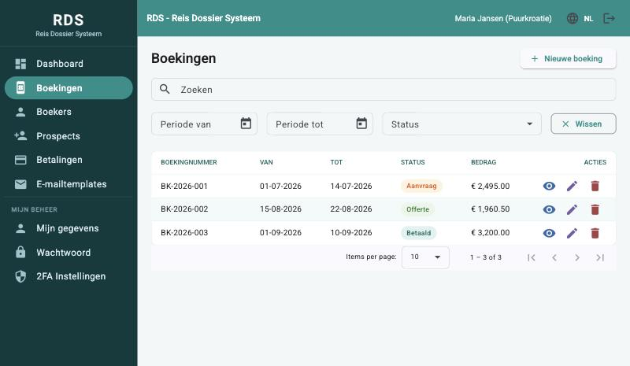
Lijsten: één vaste manier van werken
Elke lijst werkt hetzelfde: een zoekveld bovenin, de gegevens in kolommen en aan het einde van elke regel de actie-iconen. Klikken op de regel zelf doet niets.
| Icoon | Kleur | Wat het doet | Hoe riskant |
|---|---|---|---|
| oog | blauw | Inzien: alleen lezen, je kunt niets per ongeluk wijzigen | geen risico |
| potlood | violet | Bewerken: je past bestaande gegevens aan | middel |
| prullenbak | rood | Verwijderen: altijd eerst met een bevestigingsvenster | hoog |
| mail (bij prospects) | oranje-rood | E-mail versturen: gaat naar buiten en is niet terug te halen | hoog |
| + Toevoegen, nieuw | groen | Toevoegen: er komt iets bij | laag |
De kleur laat dus zien hoe voorzichtig je moet zijn, nog voor je klikt. Dezelfde kleuren gebruikt RDS bij de knoppen Bewerken, Toevoegen en Verwijderen in de kaarten van een boeking.
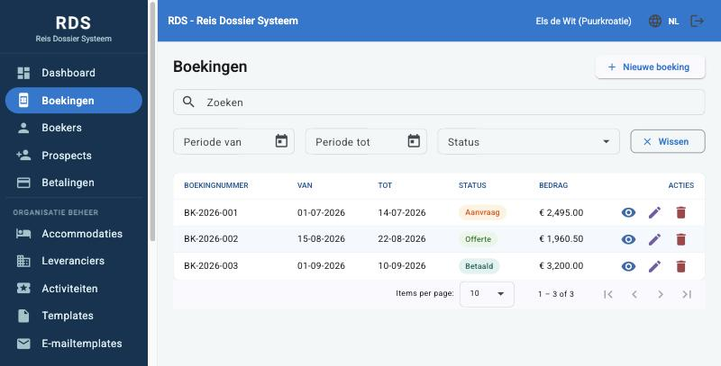
Handige afspraken
- Bevestigen. Verwijderen vraagt altijd om een bevestiging in een eigen venster.
- Alleen inzien. Met het oog-icoon opent een scherm in alleen-lezen-stand: het formulier is uitgeschakeld en er zijn geen opslaan- of verwijderknoppen.
- Dubbelklikken. Een knop Opslaan verwerkt een tweede klik niet, dus je maakt niets dubbel aan.
- Verwijderen kan niet altijd. Hangt er een boeking met documenten of betalingen aan, dan weigert RDS het verwijderen (zie hoofdstuk 12). Dat is bewust.
4. Van interesse tot afgeronde reis
Dit hoofdstuk loopt het boekingsproces door zoals je het in de praktijk doet. Elke stap noemt wat je doet en wat RDS voor je regelt.
- Interesse vastleggen: een prospect registreren
Ga naar Prospects en kies Registreer prospect. Voornaam, achternaam en een geldig e-mailadres zijn verplicht.
RDS bewaart de prospect met de status prospect; er is nog geen boeking.
- Eerste contact: een mail sturen
Klik in Prospects op het mail-icoon van de regel, kies een template (bijvoorbeeld Welkom prospect), bekijk het resultaat met Genereer voorbeeld en kies Verstuur.
RDS vult de naam van de prospect zelf in. Een mail aan een losse prospect wordt niet in een dossier bewaard.
- De prospect wordt klant Zodra er voor een prospect een boeking ontstaat, wordt hij automatisch een actieve boeker. Wil je het eerder doen, open dan de prospect met het potlood en kies Maak boeker.
- Een nieuwe boeking starten
Ga naar Boekingen en kies Nieuwe boeking. Kies in het venster de hoofdboeker, of maak met Nieuwe boeker meteen een nieuwe aan.
Je krijgt een concept-boeking: er is nog niets opgeslagen. Heeft de boeker al een lopende reis, dan waarschuwt RDS: "Mogelijk is de verkeerde boeker gekozen. Toch doorgaan?"
- Verblijven toevoegen
Kies in de kaart Accommodaties op Toevoegen: accommodatie, leverancier, van-datum, tot-datum en prijs.
Zodra je het eerste onderdeel toevoegt, maakt RDS de boeking definitief aan (na een bevestiging) en geeft het een boekingsnummer als
BK-2026-004. Ook controleert RDS de periodes: bij overlap of een gat tussen twee verblijven kies je Toch opslaan of Aanpassen. - Activiteiten toevoegen Kies de activiteit, de datum, de tijden, het trefpunt en de totaalprijs. Eindigt de activiteit na middernacht, vul dan een eindtijd in die vóór de begintijd ligt: RDS laat zien dat de activiteit de volgende dag eindigt.
- Reizigers toevoegen Voornaam en achternaam zijn verplicht; tussenvoegsel, initialen, geslacht en geboortedatum zijn optioneel.
- De status bijhouden
Kies in de kaart Boekinggegevens op Bewerken en zet de status (bijvoorbeeld van Aanvraag naar Offerte).
Periode en totaalbedrag rekent RDS zelf uit de verblijven en activiteiten; je vult ze nergens apart in.
- Documenten maken Bevestiging of voucher nodig? Kies in Berichten en documenten op Toevoegen → Document en genereer het uit een template, of upload een PDF. Zie hoofdstuk 6.
- De klant mailen Kies Toevoegen → E-mail aan hoofdboeker, kies een template en verstuur. De mail komt in het dossier te staan. Zie hoofdstuk 6.
- Betalingen vastleggen en volgen Voeg in de kaart Betalingen een betaling toe (omschrijving en bedrag, bijvoorbeeld het voorschot). De klant betaalt online in zijn portaal; Mollie meldt de uitkomst terug. Zie hoofdstuk 7.
- Afronden Zet de status op Afgerond. Het dossier blijft volledig bewaard: reizigers, verblijven, documenten, e-mails en betalingen.
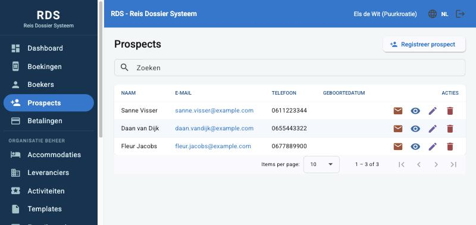
De schermen bij stap 4 en 5
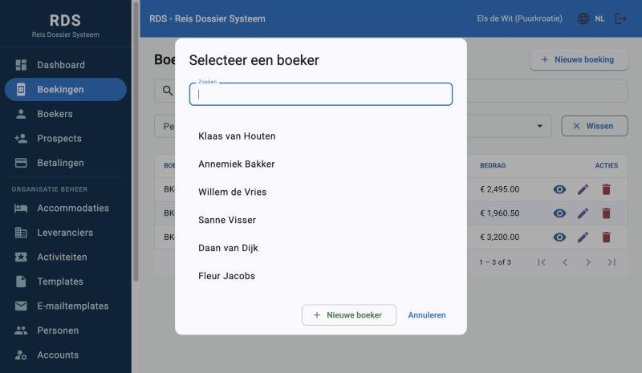
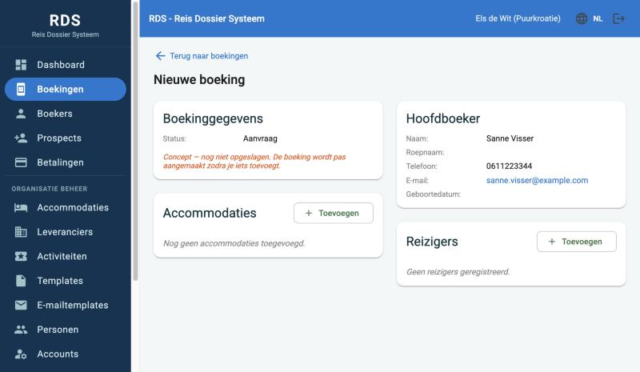
Stap 5: een verblijf toevoegen
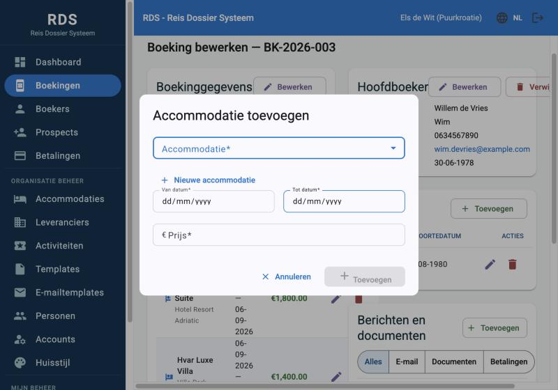
Accommodaties, leveranciers en activiteiten kies je uit een lijst. Een manager houdt die lijsten bij (hoofdstuk 9). Ontbreekt er iets, dan kun je tijdens het boeken snel een nieuwe aanmaken en later aanvullen.
5. Het boekingsscherm
Het boekingsscherm is het hoofdscherm van RDS. Alles over één reis staat op één pagina, verdeeld over kaarten. Open het via Boekingen en het potlood- of oog-icoon.
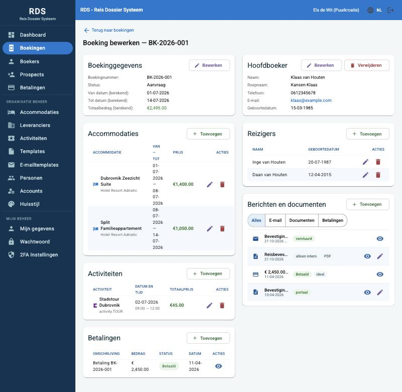
De kaarten
| Kaart | Wat je ziet | Wat je kunt doen |
|---|---|---|
| Boekinggegevens | boekingsnummer, status, periode en totaalbedrag (door RDS berekend) | Bewerken: de status zetten |
| Hoofdboeker | naam, telefoon, e-mail, geboortedatum | Bewerken van de gegevens; Verwijderen koppelt de boeker los van deze boeking (de boeker zelf blijft bestaan); Toevoegen als er nog geen hoofdboeker is |
| Accommodaties | per verblijf accommodatie, leverancier, periode en prijs | toevoegen, bewerken, verwijderen |
| Activiteiten | activiteit, datum en tijd, prijs | toevoegen, bewerken, verwijderen |
| Reizigers | naam en geboortedatum | toevoegen, bewerken, verwijderen |
| Betalingen | omschrijving, bedrag, status, datum | Toevoegen; het oog opent het betalingsvenster (hoofdstuk 7) |
| Berichten en documenten | e-mails, documenten en betalingen op volgorde van datum, nieuwste bovenaan | Toevoegen → e-mail of document; filter op soort; bekijken |
De tijdlijn Berichten en documenten
Eén lijst met alles wat bij de boeking is gebeurd. Het pictogram links toont de soort (mail, document, betaling); de vlakjes rechts de eigenschappen:
- E-mail: verstuurd of opnieuw verstuurd.
- Document: portaal als de klant het kan zien, alleen intern als alleen jullie het zien, plus het bestandstype.
- Betaling: de status en de betaalmethode.
Met de knoppen Alles, E-mail, Documenten en Betalingen filter je de lijst. Het oog opent het item, het potlood bij een document wijzigt alleen of de klant het ziet.
Een boeking met documenten, betalingen of verzonden e-mails kun je niet verwijderen. Verwijder je een boeking zonder die gegevens, dan verdwijnen ook de reizigers, verblijven, activiteiten en betalingskoppelingen. Weet je het niet zeker, zet de status dan op Afgerond in plaats van te verwijderen.
6. Documenten en e-mail
Beide maak je vanuit de boeking, in de kaart Berichten en documenten met de knop Toevoegen. E-mail aan een prospect verstuur je vanuit Prospects.
Een document toevoegen
Kies Toevoegen → Document. Je hebt twee manieren:
| Manier | Zo werkt het |
|---|---|
| Genereren | Kies een template (bijvoorbeeld Reisbevestiging), kies PDF of DOCX en kies Genereer. RDS vult de gegevens van de boeking in het sjabloon in. |
| Uploaden | Sleep een bestand in het vak, kies Kies bestand of haal het op via een internetadres. Alleen PDF-bestanden zijn toegestaan. |
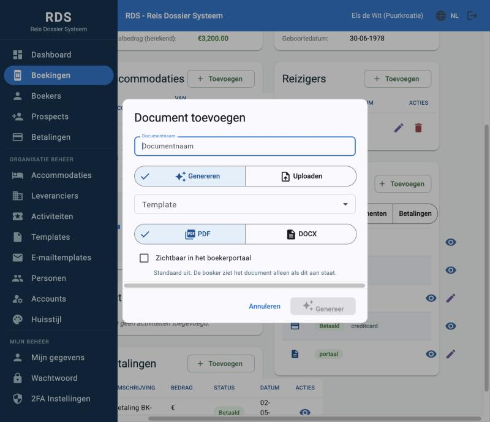
Alleen als het vinkje Zichtbaar in het boekerportaal aanstaat. Je kunt dat later wijzigen met het potlood bij het document in de tijdlijn. Een per ongeluk gemaakt document kun je niet verwijderen, maar met dat vinkje uit ziet de klant het in elk geval niet.
Een e-mail versturen
- Kies in de boeking Toevoegen → E-mail aan hoofdboeker. (Voor een prospect: het mail-icoon in Prospects.)
- Kies een template.
- Kies Genereer voorbeeld: je ziet onderwerp en tekst precies zoals de ontvanger ze krijgt, met naam en boekingsnummer ingevuld.
- Kies Verstuur en bevestig.
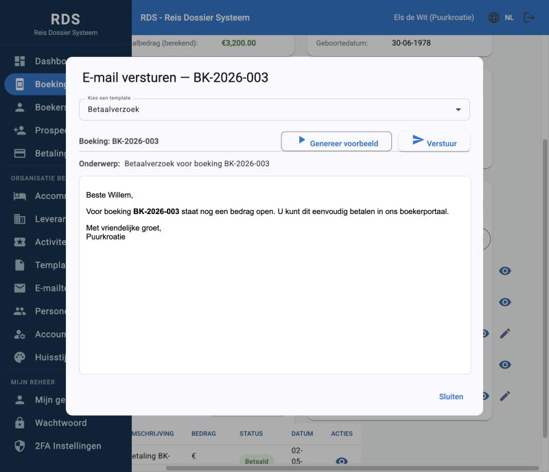
Een mail vanuit een boeking blijft in de tijdlijn staan. Open hem met het oog om te zien wat er is verstuurd, aan wie en door wie, en kies zo nodig Opnieuw versturen.
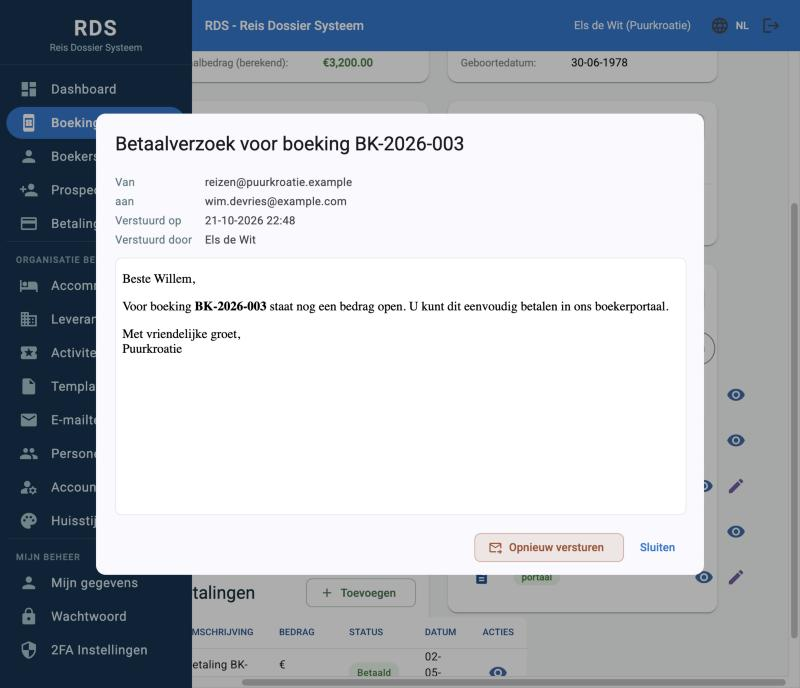
RDS meldt het als de hoofdboeker geen e-mailadres heeft of als jullie organisatie nog geen afzenderadres heeft. Vul het e-mailadres van de boeker in, of vraag een beheerder het afzenderadres in te stellen. Bijlagen, cc en bcc bestaan niet.
7. Betalingen
Betalingen verlopen via Mollie. Jij legt de betaling vast bij de boeking; de klant betaalt online in zijn portaal; Mollie meldt de uitkomst terug en RDS werkt de status bij.
Het overzicht
Het menu Betalingen toont alle betalingen van je organisatie met bovenaan het totaal, wat is betaald en wat nog openstaat.
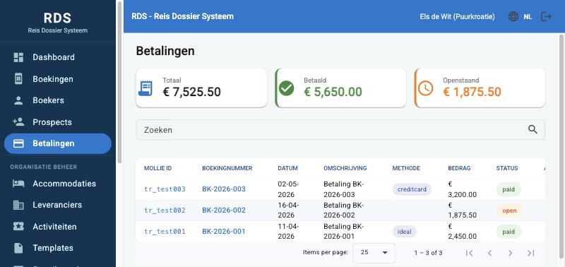
De statussen van een betaling
| Status | Betekenis |
|---|---|
| Open | vastgelegd, de klant heeft nog niet betaald |
| In afwachting | de klant is bezig, de bank bevestigt nog |
| Betaald | het geld is ontvangen |
| Mislukt, Geannuleerd, Verlopen | de betaling is niet gelukt, afgebroken of te laat |
Mollie bepaalt de statussen In afwachting, Geautoriseerd en Verlopen; die kun je niet zelf zetten.
Het betalingsvenster
Het oog-icoon bij een betaling opent het venster met de gegevens en de volledige statushistorie: wie of wat de status wanneer heeft veranderd.
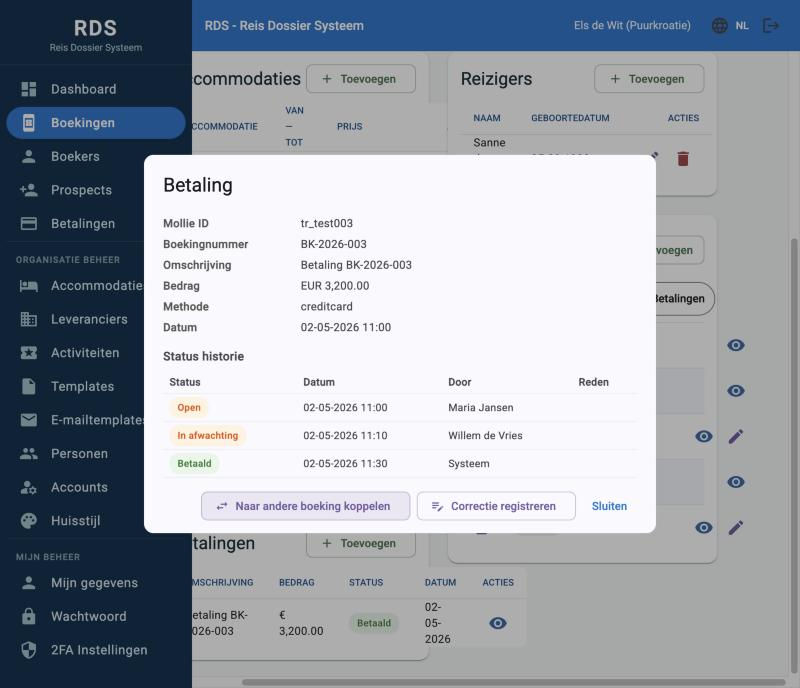
Wat kun je wijzigen?
- Bedrag of omschrijving aanpassen kan alleen zolang de betaling nog niet bij Mollie bestaat. Is de klant al aan het betalen geweest of is de betaling gestart, dan staat ze vast.
- Verwijderen kan nooit; betalingen blijven bewaard.
- Manager Correctie registreren: een nieuwe status (open, betaald, mislukt, geannuleerd) met een reden van minstens 5 tekens. Het komt als nieuwe regel in de historie, met jouw naam en de markering Correctie.
- Manager Naar andere boeking koppelen: als een betaling bij de verkeerde boeking staat. Kies de juiste boeking van jullie organisatie en geef een reden. De koppelgeschiedenis blijft zichtbaar.
Een betaling is geld. Daarom wijzigt of wist niemand stilletjes iets: elke afwijking wordt als nieuwe regel met reden vastgelegd.
8. Boekers en prospects
Een boeker is de klant die een reis boekt; een prospect is iemand die nog niet heeft geboekt. Beide staan in dezelfde lijst onder de motorkap, maar in het menu zijn ze gescheiden: Boekers en Prospects.
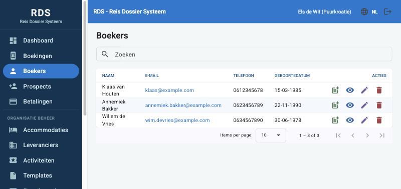
Wat je kunt doen
- Zoeken op naam, e-mailadres of telefoonnummer.
- Een boeker of prospect aanmaken en bewerken. Voornaam, achternaam en een geldig e-mailadres zijn verplicht.
- Een boeking starten met het groene icoon op de regel. Heeft de boeker al boekingen, dan kies je eerst of je een bestaande opent of een nieuwe maakt.
- Adressen beheren in het bewerkvenster (woon-, factuur-, accommodatie- of leveranciersadres). Dat kan bij een bestaande boeker.
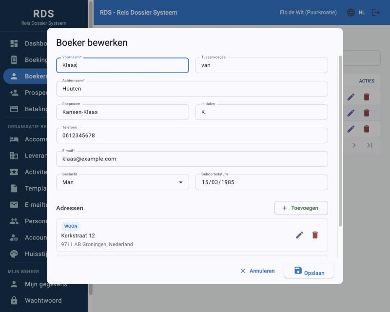
Statussen van een boeker
| Status | Betekenis |
|---|---|
| prospect | potentiële klant, nog geen boeking |
| active | klant; wordt vanzelf zo zodra er een boeking voor een prospect ontstaat |
| nietactief | geen lopende klant meer; wordt niet vanzelf weer actief |
Een boeker met boekingen met documenten of betalingen kun je niet verwijderen; de gegevens blijven bewaard.
9. Voor managers: beheren en inrichten Manager
Als manager beheer je de gegevens waarmee je team boekt, de sjablonen en de gebruikers van je organisatie. Alles wat in dit hoofdstuk staat, zie je in het menu onder Organisatie beheer.
Overzicht van het beheergedeelte
| Menu | Waarvoor |
|---|---|
| Dashboard | cijfers van het lopende jaar: aantal boekingen, omzet, betaald, openstaand, top 5 accommodaties |
| Accommodaties | de verblijven die je kunt boeken, met adres en leveranciers |
| Leveranciers | de partijen waarvan je inkoopt, met adres en bijbehorende accommodaties |
| Activiteiten | tours, excursies, tickets en transfers die je kunt toevoegen aan een boeking |
| Templates | Word-sjablonen voor documenten (bevestiging, voucher, ...) |
| E-mailtemplates | sjablonen voor e-mails aan klanten en prospects |
| Personen en Accounts | je collega's en hun inloggegevens en rol |
| Huisstijl | kleuren (en logo) van je organisatie in RDS |
Het dashboard
Het dashboard toont de cijfers van het lopende jaar. Klik op een tegel om naar de bijbehorende lijst te gaan (bijvoorbeeld Openstaand naar Betalingen). Zie ook de afbeelding in hoofdstuk 1.
Accommodaties, leveranciers en activiteiten
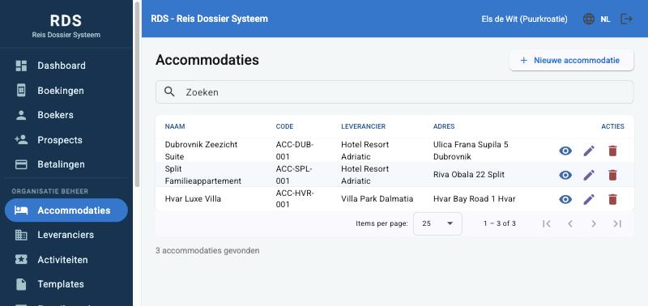
| Onderdeel | Verplicht | Goed om te weten |
|---|---|---|
| Accommodatie | code en naam | je koppelt er een of meer leveranciers en adressen aan; zoeken kan op naam, code of leverancier |
| Leverancier | code en naam | met adressen en de gekoppelde accommodaties |
| Activiteit | naam en type | type is tour, excursie, ticket of transfer |
Verwijder je een accommodatie of leverancier, dan verdwijnen ook de boekingsregels waarin ze voorkomen. RDS waarschuwt daarvoor. Hangt er een boeking met documenten of betalingen aan, dan weigert RDS het verwijderen.
Templates: sjablonen voor documenten en e-mails
Een template is een tekst met invulvelden, zoals ${booking.bookingNumber}. Bij het maken van een document of e-mail vult RDS de velden met de gegevens van de boeking en de boeker. Hier maak en beheer je alleen de sjablonen; ze gebruiken doe je vanuit een boeking (hoofdstuk 6).
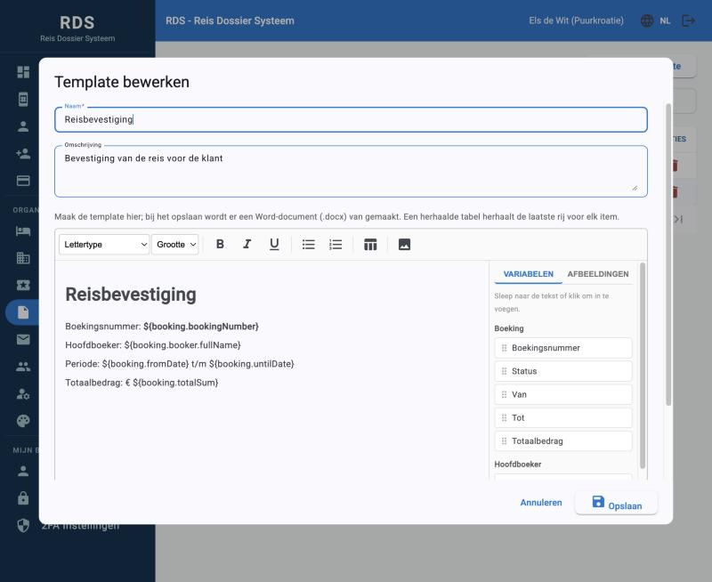
| Soort | Zo maak je hem |
|---|---|
| Word-template menu Templates | Kies Nieuwe template en dan In de editor maken (opmaak, tabellen, afbeeldingen, velden), of Word-bestand uploaden met velden die al in je .docx staan. |
| E-mailtemplate menu E-mailtemplates | Naam, onderwerp (mag velden bevatten) en tekst in dezelfde editor. |
- Met Genereer voorbeeld in het verstuurvenster (hoofdstuk 6) zie je meteen of een veld goed is ingevuld.
- Een herhaalde tabel herhaalt de laatste rij voor elk item, bijvoorbeeld voor elke reiziger of elk verblijf.
- In de editor staat naast Variabelen het tabblad Afbeeldingen: de bibliotheek met logo's en plaatjes van jullie organisatie (PNG, JPEG, GIF of WebP, maximaal 2 MB).
De volledige lijst met velden, herhaalde tabellen en valkuilen staat in de technische handleiding (docs/handleiding.md, hoofdstuk 7).
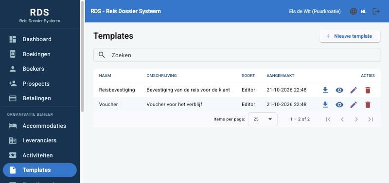
E-mailtemplates
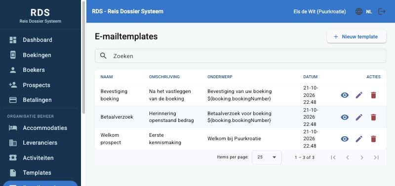
Een e-mailtemplate versturen kan niet vanuit dit scherm: dat doe je vanuit een boeking of een prospect, zodat altijd vaststaat aan wie de mail gaat.
Collega's beheren: personen en accounts
Een collega heeft een persoon (naam) en een account (inloggegevens) met een rol. Jij mag de rollen Medewerker en Manager toewijzen; de rol van beheerder niet.
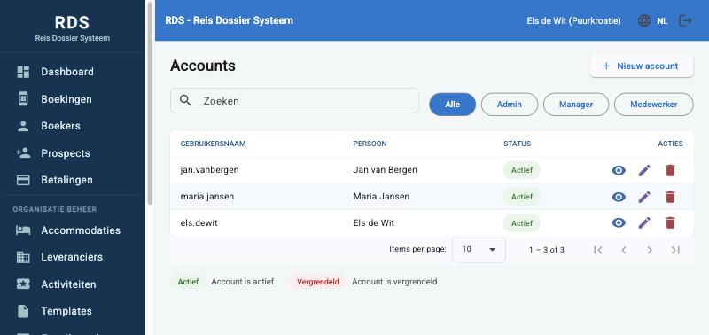
- Persoon aanmakenGa naar Personen → Nieuwe persoon. Voornaam en achternaam zijn verplicht. Je maakt personen automatisch aan in je eigen organisatie.
- Account aanmakenGa naar Accounts → Nieuw account: kies de persoon, een gebruikersnaam en een startwachtwoord. Zet Wachtwoord moet gewijzigd worden aan, dan kiest je collega bij de eerste keer inloggen zelf een nieuw wachtwoord.
- Rol toewijzenOpen het account met het potlood en kies onder Rollen een rol (Medewerker of Manager) en Toevoegen.
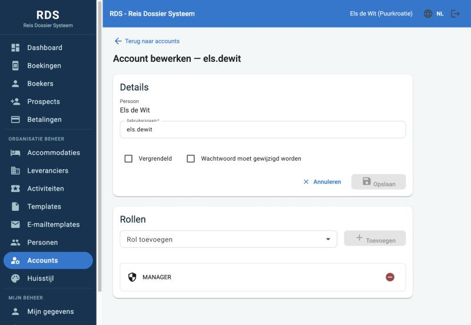
Een rolwijziging werkt pas bij de volgende keer inloggen van je collega (de sessie duurt een uur). Wil je dat het direct ingaat, laat hem dan uit- en weer inloggen. Verlies je 2FA-apparaat? Een manager kan 2FA resetten in het account.
Huisstijl
Met Huisstijl bepaal je de kleuren van RDS voor je hele organisatie: de balk, het actieve menu-item, de tabelkoppen en de knoppen. Je ziet het resultaat direct in het voorbeeld.
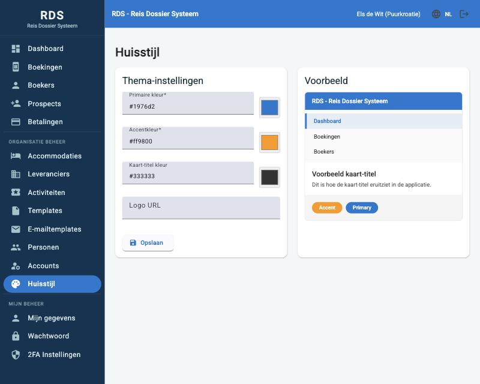
#1976d2. Zonder huisstijl gebruikt RDS het standaard-groenblauw.- Primaire kleur: de hoofdkleur (balk, actieve onderdelen).
- Accentkleur: de tweede kleur voor details.
- Kaart-titel kleur: de kleur van de koppen in de kaarten.
- Logo URL: het internetadres van je logo (maximaal 500 tekens).
10. Wat ziet de klant?
De klant heeft een eigen pagina, het klantportaal. Daar ziet hij alleen zijn eigen boeking, zonder te klikken: de reis in één oogopslag, zijn verblijven en activiteiten, de betalingen en de Berichten en documenten die jij hebt klaargezet.
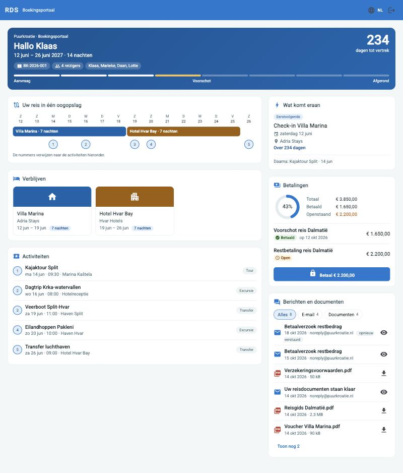
Wat bepaalt wat de klant ziet?
| Onderdeel | De klant ziet het als... |
|---|---|
| Reisgegevens, verblijven, activiteiten | je ze in de boeking hebt toegevoegd |
| Documenten | bij het document Zichtbaar in het boekerportaal aanstaat |
| E-mails | je ze vanuit de boeking aan de hoofdboeker hebt verstuurd (alle mails, de klant heeft ze immers zelf ook ontvangen) |
| Betalingen | je ze bij de boeking hebt toegevoegd; de klant kan een openstaande betaling meteen betalen via Mollie |
- De klant kan niets wijzigen; hij kan alleen betalen en documenten downloaden.
- De klant logt in met zijn e-mailadres, het boekingsnummer en een eenmalige code.
De eenmalige code wordt op dit moment nog niet per e-mail naar de klant gestuurd (de koppeling is nog niet gelegd). Klanten kunnen daarom nog niet zelfstandig inloggen. Vraag het je beheerder wanneer dit is ingericht.
11. Wie mag wat?
Wat je mag, hangt af van je rol. RDS verbergt knoppen en menu-items waar je geen recht op hebt. Dit overzicht laat het verschil zien tussen medewerker en manager:
| Onderdeel | Medewerker | Manager |
|---|---|---|
| Boekingen, boekers, prospects en reizigers aanmaken, bekijken, wijzigen en verwijderen | ✓ | ✓ |
| Verblijven en activiteiten aan een boeking toevoegen | ✓ | ✓ |
| Documenten maken, uploaden en zichtbaarheid zetten | ✓ | ✓ |
| E-mail versturen en opnieuw versturen | ✓ | ✓ |
| Betalingen vastleggen en bekijken | ✓ | ✓ |
| Betaling aanpassen (zolang niet bij Mollie), corrigeren en naar andere boeking koppelen | – | ✓ |
| Accommodaties, leveranciers en activiteiten kiezen in een boeking | ✓ | ✓ |
| Accommodaties, leveranciers en activiteiten beheren (menu Organisatie beheer) | – | ✓ |
| E-mailtemplates bekijken | ✓ | ✓ |
| Templates (Word en e-mail) maken, wijzigen en verwijderen | – | ✓ |
| Personen en accounts beheren; rol Medewerker of Manager toewijzen | – | ✓ |
| Huisstijl van de organisatie | – | ✓ |
| Dashboard met cijfers | – | ✓ |
| Eigen gegevens, wachtwoord en 2FA | ✓ | ✓ |
Organisaties aanmaken, rollen en rechten beheren en de rol van beheerder toewijzen kan alleen een beheerder van het hele platform. Die rol hoort niet bij het dagelijkse boekingswerk en komt in deze handleiding niet verder aan bod.
Gegevens van andere organisaties zijn voor niemand zichtbaar, ook niet als je het adres van een scherm kent.
12. Hulp bij problemen
Inloggen en je account
| Wat gebeurt er | Waarom | Wat je doet |
|---|---|---|
| Een menu-item of knop ontbreekt | je rol heeft daar geen recht op | vraag een manager om het te regelen of om het voor je te doen |
| "Controleer gebruikersnaam en wachtwoord" | verkeerde gegevens, of je account is vergrendeld | controleer je wachtwoord; vraag een manager je account te ontgrendelen |
| Je moet steeds een nieuw wachtwoord kiezen | bij je account staat "Wachtwoord moet gewijzigd worden" aan | kies een nieuw wachtwoord; het vinkje vervalt daarna |
| Je 2FA-telefoon is kwijt | geen toegang tot je codes | gebruik een herstelcode; of laat een manager 2FA resetten |
| Na een rolwijziging verandert er niets | de wijziging werkt pas bij een nieuwe sessie | uitloggen en weer inloggen |
Boekingen en documenten
| Wat gebeurt er | Waarom | Wat je doet |
|---|---|---|
| "Kan niet worden verwijderd" | er hangen documenten, betalingen of verzonden e-mails aan; dit is bewust | laat het staan en zet de boeking op Afgerond |
| Een verkeerd document staat in de boeking | documenten kunnen niet worden verwijderd | haal het vinkje Zichtbaar in het boekerportaal uit en maak zo nodig een nieuw document |
| Uploaden van een document wordt geweigerd | alleen PDF-bestanden zijn toegestaan | sla het bestand op als PDF |
E-mail, betalingen en de klant
| Wat gebeurt er | Waarom | Wat je doet |
|---|---|---|
| E-mail versturen mislukt | de hoofdboeker heeft geen e-mailadres, of jullie organisatie heeft nog geen afzenderadres | vul het e-mailadres in; vraag een beheerder het afzenderadres in te stellen |
| "Onbekende of lege placeholder" | een template met boekingsvelden is voor een prospect gebruikt | verstuur de mail vanuit een boeking, of gebruik een template zonder boekingsvelden |
| "Deze betaling bestaat al bij Mollie" | de betaling is al gestart en staat vast | gebruik een correctie of koppel haar om (manager) |
| De klant ziet een document niet | "Zichtbaar in het boekerportaal" staat uit | zet het vinkje aan via het potlood in de tijdlijn |
| De klant ziet de betaalstatus niet bijgewerkt | de melding van Mollie is er nog niet | even wachten; het klantportaal ververst zelf |
Noteer wat je deed, het boekingsnummer en de melding op je scherm (een screenshot helpt) en neem contact op met je manager of beheerder.
13. Begrippen en statussen
Statussen van een boeking
| Status | Gebruik hem als... |
|---|---|
| Aanvraag | de klant interesse heeft in een reis en je het dossier opent |
| Offerte | je een voorstel hebt gestuurd |
| Boeking | de klant akkoord is en de reis vaststaat |
| Voorschot | het voorschot is betaald |
| Betaald | alles is betaald |
| Op reis | de klant onderweg is |
| Weer thuis | de klant terug is, er kan nog iets af te handelen zijn |
| Afgerond | alles is afgehandeld |
Begrippenlijst
| Begrip | Uitleg |
|---|---|
| Boeking | het reisdossier, met een boekingsnummer zoals BK-2026-001 |
| Boeker / hoofdboeker | de klant die de reis boekt; bij een boeking de hoofdboeker |
| Prospect | een potentiële klant die nog niet heeft geboekt |
| Reiziger | iemand die meereist op een boeking |
| Accommodatie | een verblijf, bij een boeking een regel met periode en prijs |
| Leverancier | de partij waarvan je een verblijf inkoopt |
| Activiteit | tour, excursie, ticket of transfer |
| Concept-boeking | een voorgevuld scherm voor een boeking die nog niet is opgeslagen |
| Template | sjabloon met invulvelden voor een Word-document of een e-mail |
| Document | een bestand bij een boeking, gemaakt uit een template of geüpload als PDF |
| Klantportaal | de eigen pagina van de klant met zijn reis, documenten en betalingen |
| Mollie | de online betaaldienst waarmee klanten betalen |
| 2FA | een tweede controle bij het inloggen: een code uit een app |
| Huisstijl | de kleuren van je organisatie in RDS |
Deze handleiding beschrijft RDS zoals het op 21 oktober 2026 werkt. De technische kant (rechtenmodel, koppelingen, installatie) staat in docs/handleiding.md.